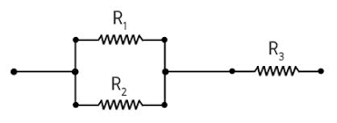
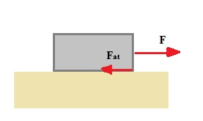
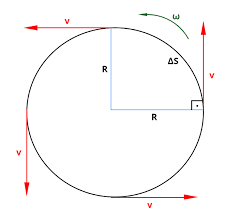

Associação de Resistores

Associação de resistores é o circuito elétrico formado por dois ou mais elementos de resistência elétrica ôhmica (constante), ligados em série, paralelo ou ainda, em uma associação mista. Quando ligados em série, os resistores são percorridos pela mesma corrente elétrica, quando em paralelo, o potencial elétrico é igual para os resistores associados.
Resistência Equivalente
Resistência equivalente é um recurso utilizado para simplificar circuitos elétricos formados por associações de resistores, ou até mesmo para obtermos resistências elétricas diferentes daquelas que dispomos. Quando calculamos a resistência equivalente buscamos encontrar qual é a resistência de um único resistor que equivale à resistência do conjunto de resistores.
Associação de resistores em série
Quando ligados em série, os resistores são percorridos pela mesma corrente elétrica. Na ligação em série, todos os elementos ligados estão conectados no mesmo ramo do circuito, de modo que o terminal de um dos resistores está diretamente ligado ao terminal do próximo resistor.
Ainda não entendeu? Não tem problema, veja esse vídeo quantas vezes quiser:
Resumindo, na ligação em série, as resistências somam-se,os potenciais elétricos somam-se, e a corrente elétrica é igual para todos os resistores.
Agora, para aprender melhor, vamos fazer alguns exercícios, para fizar melhor o conteúdo? Veja este vídeo abaixo de resolução de exercícios
Os resistores podem estar associados tanto em paralelo quanto em série, para saber mais a respeito Clique aqui.
Força de Atrito

A força de atrito surge em sentido contrário ao movimento de um objeto. Ela pode ser estática, se o objeto está em repouso, ou dinâmica, se o objeto está em movimento. Quando empurramos ou puxamos um determinado objeto tentando movê-lo, percebemos que existe certa dificuldade para colocá-lo em movimento. Essa dificuldade deve-se à força de atrito, que é uma força que se opõe ao movimento de objetos que estão sob a ação de uma força. Ela age paralelamente à superfície de contato e em sentido contrário à força aplicada sobre um corpo.
Ainda não entendeu? Não tem problema, veja esse vídeo quantas vezes quiser:
A força de atrito depende de dois fatores:
Do tipo dos materiais que estão em contato: cada material tem suas características próprias. Quanto mais “lisos” ou “polidos” estiverem os objetos em contato, menor será a força de atrito. Essa propriedade é definida numericamente pelo coeficiente de atrito, que pode ser dinâmico ou estático, possuindo um valor diferente para cada material.
Força normal: trata-se da reação normal à superfície sobre a qual o corpo está apoiado e depende do peso do objeto. Quanto maior for a força normal, maior será a força de atrito.
Agora, para aprender melhor, vamos fazer alguns exercícios, para fizar melhor o conteúdo? Veja este vídeo abaixo de resolução de exercícios.
MCU - Movimento Circular Uniforme

Movimento circular uniforme é um tipo de movimento que ocorre com velocidade escalar constante ao longo de uma trajetória de formato circular. Apesar de receber o adjetivo uniforme, esse movimento é acelerado, uma vez que a mudança na direção do vetor velocidade implica a existência de uma aceleração centrípeta de direção radial, cujo sentido aponta para o centro da curva.
Aceleração centrípeta no MCU
A aceleração centrípeta é aquela que aponta sempre para o centro da curva realizada por uma partícula em movimento circular. Essa aceleração pode ser produzida por uma tração, força de atrito, força magnética, entre outras.
Assim como a aceleração escalar, a aceleração centrípeta é medida em m/s². Entretanto, o significado físico da aceleração centrípeta é diferente do significado da aceleração escalar. Enquanto essa última indica a variação da magnitude da velocidade, a aceleração centrípeta indica uma variação na direção da velocidade, graças ao caráter vetorial da velocidade no movimento circular.
Ainda não entendeu? Não tem problema, veja esse vídeo quantas vezes quiser:
A velocidade angular relaciona-se ainda com outras duas importantes grandezas para os movimentos circulares: frequência (f) e período (T). A frequência, cuja unidade de medida também é o Hz, indica a quantidade de rotações que uma partícula realiza a cada segundo, enquanto o período indica o tempo necessário para essa partícula percorrer uma volta completa. Dessa maneira, frequência e período são grandezas inversamente proporcionais e relacionadas entre si.
Agora, para aprender melhor, vamos fazer alguns exercícios, para fizar melhor o conteúdo? Veja este vídeo abaixo de resolução de exercícios.